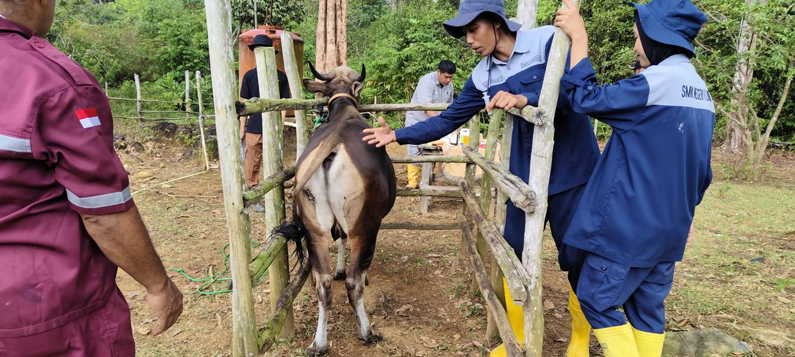
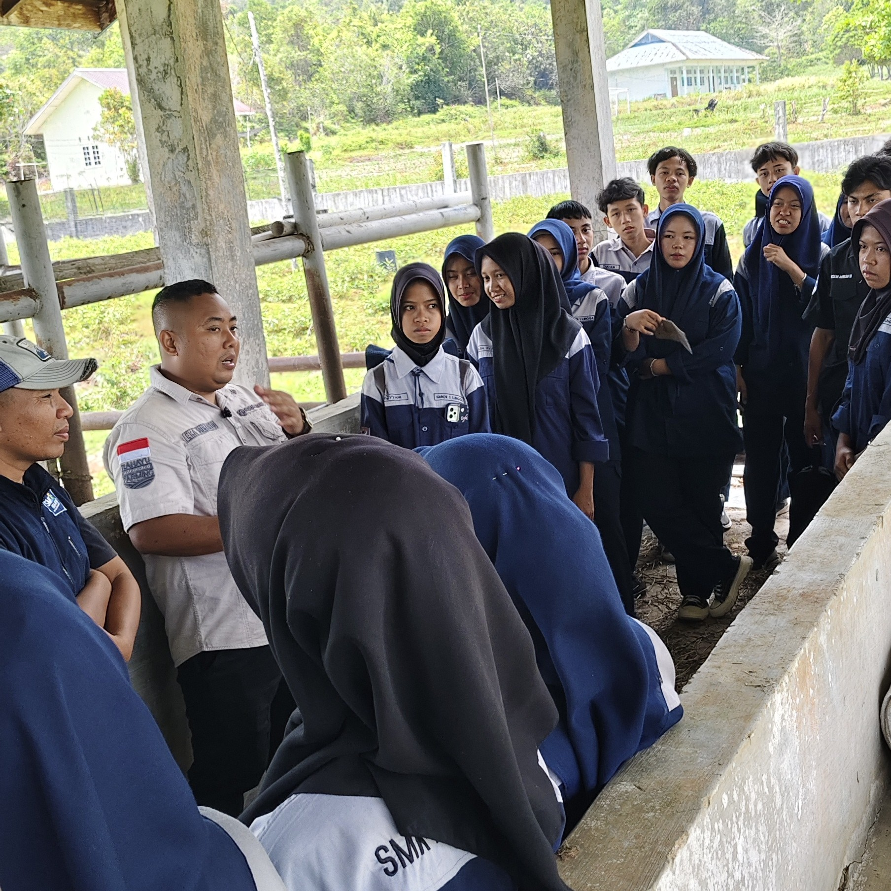
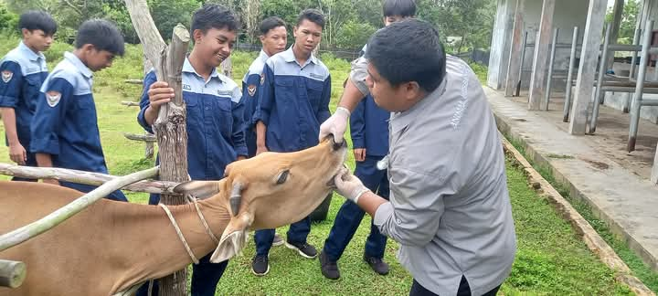
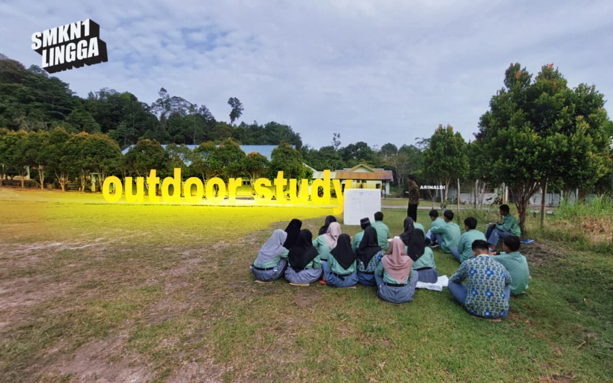

DUDI (Dunia Usaha dan Dunia Industri) adalah mitra utama SMK Negeri 1 Lingga dalam mewujudkan pendidikan vokasi yang relevan, berkualitas, dan berdampak nyata bagi siswa dan masyarakat.
🏢 Dunia Usaha (DU)
Dunia Usaha mencakup seluruh entitas bisnis dan wirausaha yang bergerak di sektor peternakan, pengolahan hasil ternak, dan agribisnis. Kemitraan dengan pelaku usaha lokal maupun nasional menjadi kunci dalam mempersiapkan lulusan yang siap terjun ke dunia kerja secara profesional.
Dunia Industri meliputi perusahaan skala besar, balai penelitian, dan lembaga pemerintah di bidang peternakan dan agribisnis. Melalui program PKL, Guru Tamu, dan sertifikasi, siswa mendapatkan pengalaman langsung dari para profesional industri yang berpengalaman.
🏢 Perusahaan Pakan🔬 Balai Peternakan🏛️ Dinas Pertanian💉 Klinik Hewan📦 Distribusi Ternak
3+
Mitra DUDI Aktif
19+
Siswa PKL Per Tahun
6+
Bulan Durasi PKL
100%
Siswa Terlayani PKL
🤝
Berikut adalah lembaga dan perusahaan yang telah menjalin kerja sama resmi dengan SMK Negeri 1 Lingga sebagai mitra DUDI.
🐄
Tarigan Farm
📍 Panggak Darat, Kabupaten Lingga
Peternakan sapi lokal yang menjadi mitra utama program PKL dan UKK siswa Program Keahlian ATR. Siswa melakukan praktik langsung dalam teknik budidaya, penggemukan, dan manajemen kandang sapi di lokasi ini.
✅ Mitra Aktif PKL & UKK
🌾
PT Rahayu Agro Makmur
📍 Mitra Guru Tamu & PKL
Perusahaan agribisnis yang aktif menjalin kerja sama melalui program Guru Tamu dan penempatan PKL. Dipimpin oleh Eka Susanto, S.Pd, perusahaan ini berkomitmen meningkatkan kualitas lulusan SMKN 1 Lingga.
✅ Mitra Guru Tamu & PKL
🏛️
Dinas Pertanian & Peternakan
📍 Kabupaten Lingga
Instansi pemerintah yang mendukung pengembangan kompetensi siswa melalui program magang, bimbingan teknis, dan membuka peluang penempatan kerja bagi lulusan terbaik di sektor pertanian dan peternakan daerah.
✅ Mitra Instansi Pemerintah
➕
Tambah Mitra DUDI
Salin blok .mitra-card di atas untuk menambah mitra baru
🎯
Program kemitraan SMKN 1 Lingga dengan DUDI dirancang untuk menjembatani dunia pendidikan dan dunia kerja secara nyata, relevan, dan berkelanjutan.
Mengapa Kemitraan DUDI Penting?
Empat pilar utama yang menjadi dasar program kemitraan SMKN 1 Lingga dengan DUDI.
🎯
Relevansi Kurikulum
Kurikulum disesuaikan langsung dengan kebutuhan industri terkini agar kompetensi lulusan langsung terpakai di lapangan kerja.
🤝
Guru Tamu Industri
Praktisi dan pakar dari DUDI hadir langsung di kelas untuk berbagi ilmu, pengalaman nyata, dan inovasi terkini di bidang peternakan.
🏭
Tempat PKL
Seluruh siswa kelas XI ditempatkan di mitra DUDI untuk Praktik Kerja Lapangan selama 3–6 bulan dengan bimbingan profesional.
💼
Penyerapan Lulusan
Mitra DUDI membuka jalur rekrutmen langsung bagi lulusan terbaik, meningkatkan angka penyerapan tenaga kerja lulusan SMKN 1 Lingga.
📋 Alur Praktik Kerja Lapangan (PKL)
Tahapan proses PKL siswa SMK Negeri 1 Lingga di mitra DUDI.
1
Permohonan PKLSebelum keberangkatan
Sekolah mengajukan surat permohonan resmi kepada mitra DUDI, dilengkapi data siswa dan rencana program PKL.
2
Pembekalan Siswa1 minggu sebelum PKL
Siswa mendapat pembekalan materi, tata tertib, dan SOP kerja di DUDI dari koordinator PKL sekolah.
3
Pelaksanaan PKL3 – 6 bulan di lokasi DUDI
Siswa bekerja langsung di bawah bimbingan mentor DUDI, mencatat jurnal harian, dan mengaplikasikan kompetensi yang dipelajari di sekolah.
4
Monitoring & EvaluasiSelama PKL berlangsung
Guru pembimbing PKL melakukan kunjungan berkala ke lokasi DUDI untuk memonitor perkembangan dan memastikan siswa mendapatkan pengalaman yang optimal.
5
Laporan & SertifikatPasca PKL
Siswa menyusun laporan PKL dan menerima sertifikat dari mitra DUDI sebagai bukti kompetensi kerja yang diakui industri.
📸
Dokumentasi kegiatan Praktik Kerja Lapangan siswa SMK Negeri 1 Lingga di berbagai mitra DUDI. Tambahkan foto PKL baru dengan mengganti src gambar pada kode.

PKL di Tarigan FarmPanggak Darat · UKK 2026

Kunjungan PT Rahayu Agro MakmurMitra DUDI · Februari 2026

Praktik Kandang — PKLKegiatan Lapangan Siswa

Pembelajaran OutdoorPraktik Lapangan Agribisnis
📷
Tambah Foto PKL
Salin blok .pkl-card dan ganti src gambar untuk menambah foto baru